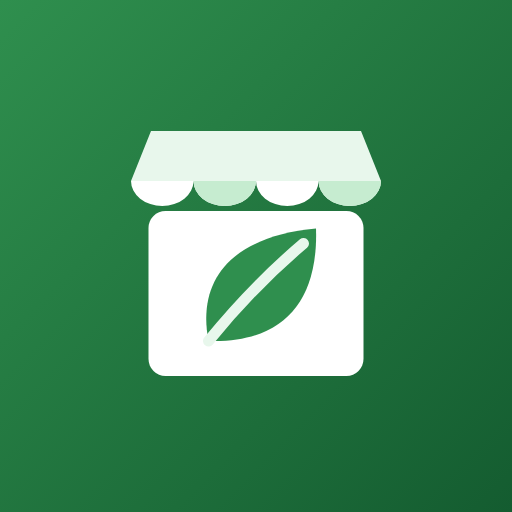
Inventario, precios en CUP calculados con el cambio del dólar del día, ventas, compras, gastos, estadísticas y el cierre de cada día para comprobar que el dinero de la caja cuadra. Hecha para teléfonos Android, funciona sin internet y guarda todo en el teléfono.
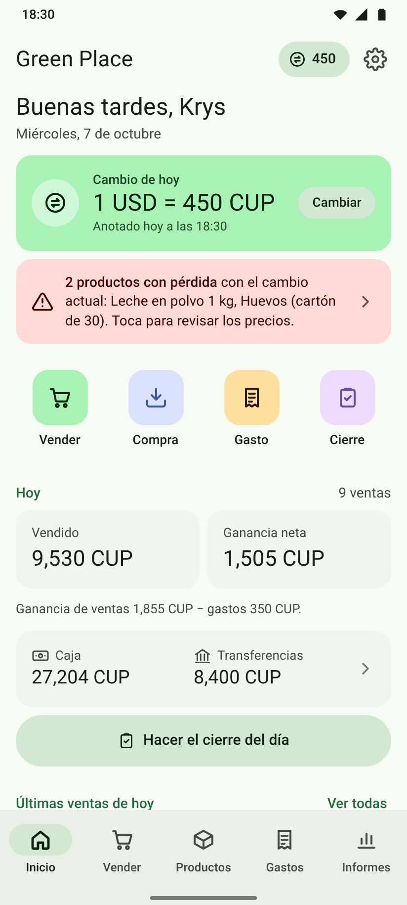
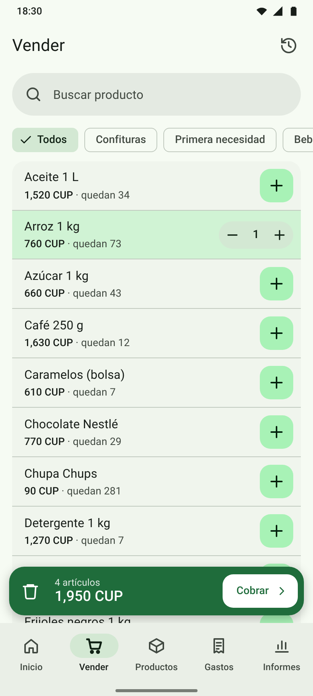
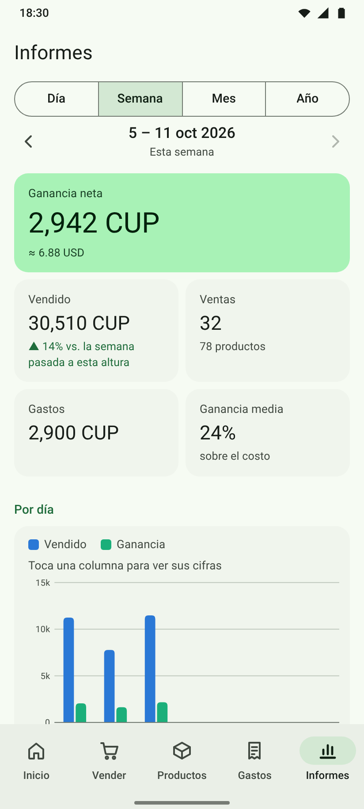
Green Place lleva las cuentas del puesto para que no haya que recordarlas de memoria:
La app es una página web que se instala como una aplicación más: con su icono, a pantalla completa y funcionando sin internet después de la primera vez.
Mientras no esté instalada, la pantalla Inicio muestra un aviso verde «Instala la app» que hace lo mismo. También está en Ajustes → Instalar en el teléfono.
El botón Atrás del teléfono (o el gesto de deslizar desde el borde) cierra la pantalla o el diálogo que tengas abierto, y desde otra pestaña te devuelve a Inicio.
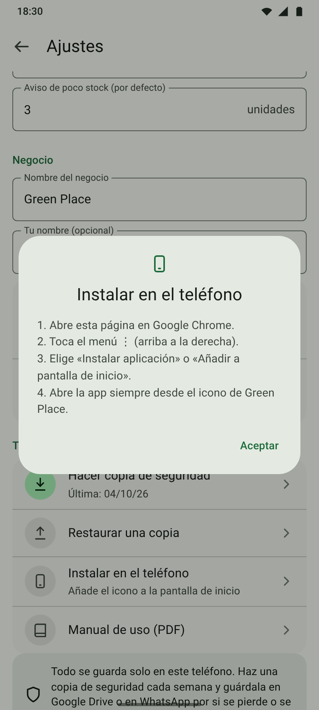
La primera vez se abre la pantalla de bienvenida:
Toca Empezar. La app te propone añadir tu primer producto.
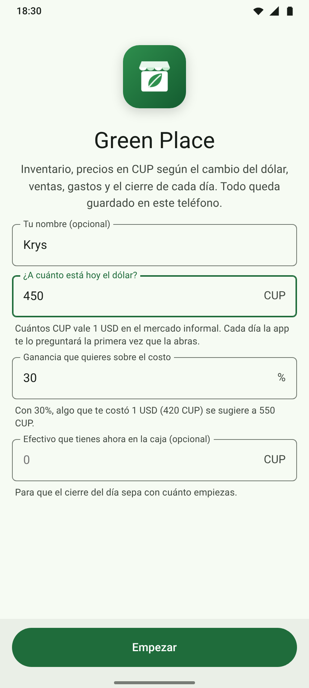
En la pestaña Productos toca + Nuevo → Nuevo producto y rellena:
Toca Guardar. Repite con cada producto. Después, la mercancía nueva se añade con Registrar compra (capítulo 10), no creando el producto otra vez.
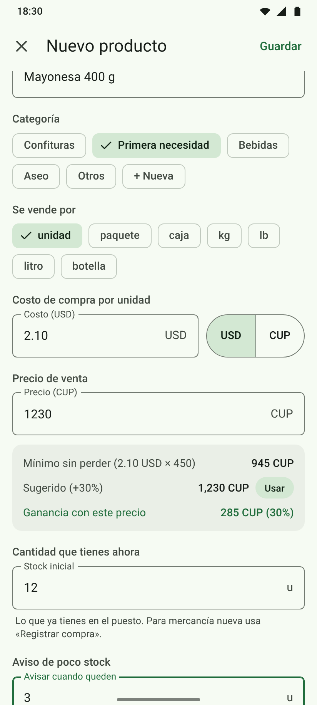
Todos los precios mínimos y sugeridos dependen del cambio. Por eso:
En Ajustes → Historial del cambio queda la lista de todos los valores anotados con fecha y hora, y cuánto subió o bajó cada vez.
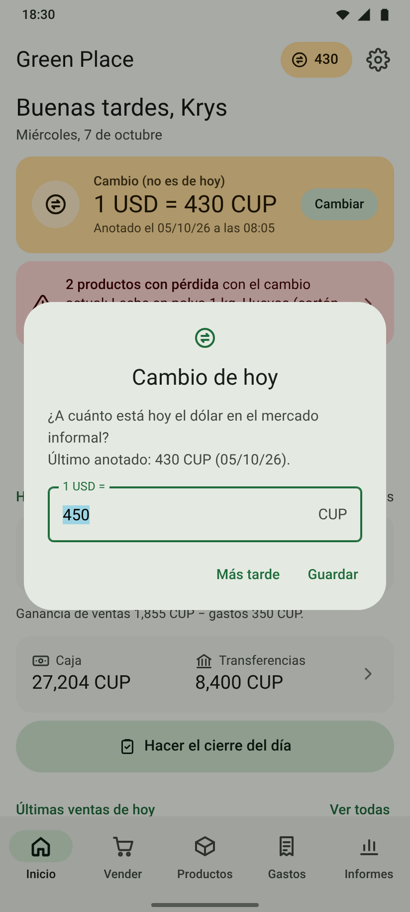
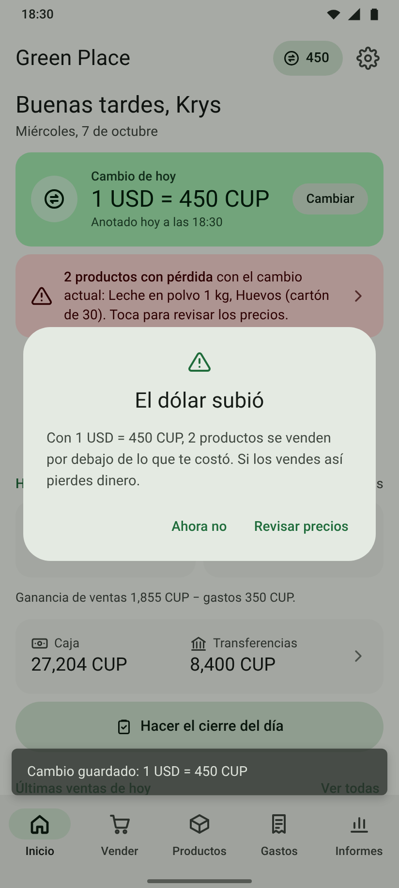
Si al anotar el nuevo cambio hay productos cuyo precio queda por debajo de lo que costaron (convertido a CUP con el cambio de ahora), la app te avisa enseguida: «El dólar subió… si los vendes así pierdes dinero».
Además, mientras haya productos así, la pantalla Inicio muestra un aviso rojo con sus nombres, y en la lista de productos llevan la etiqueta Pérdida.
Toca Revisar precios para ir a la pantalla de revisión (página siguiente).
Muestra cada producto con pérdida o con ganancia baja: el precio actual, el mínimo sin perder y el sugerido.
También se abre desde Productos → ⋮ → Revisar precios con pérdida o tocando el aviso rojo de Inicio.
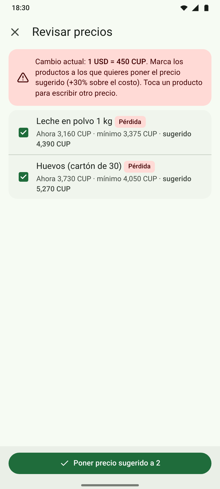
Con el costo en dólares de cada producto y el cambio de hoy:
Precio mínimo = costo en USD × cambio de hoy Precio sugerido = precio mínimo + 30%, redondeado hacia arriba a 10 CUP| Ejemplo: galletas que costaron 0.90 USD | Dólar a 400 | Dólar a 450 |
|---|---|---|
| Precio mínimo (lo que te costó en CUP) | 360 CUP | 405 CUP |
| Precio sugerido (+30%) | 470 CUP | 530 CUP |
| Si las vendes a 380 CUP… | ganas 20 | pierdes 25 |
Es lo primero que ves al abrir la app. De arriba abajo:
Abajo está la barra con las cinco pestañas: Inicio, Vender, Productos, Gastos e Informes. La rueda de arriba abre los Ajustes.
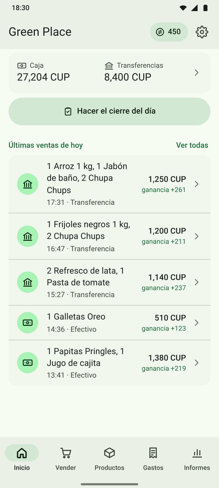
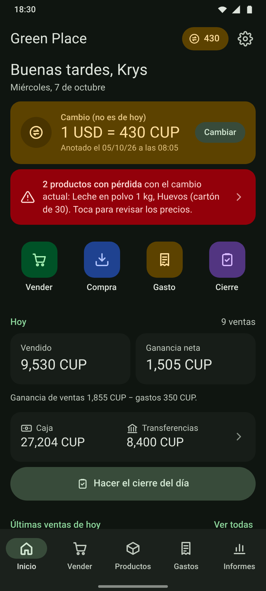
En la pestaña Vender está la lista de productos con su precio y lo que queda.
Los productos agotados salen al final con la palabra agotado; los que dan pérdida llevan un aviso rojo.
Justo después aparece abajo «Venta registrada» con el botón Deshacer por si te equivocaste: la venta se borra y los productos vuelven al carrito.
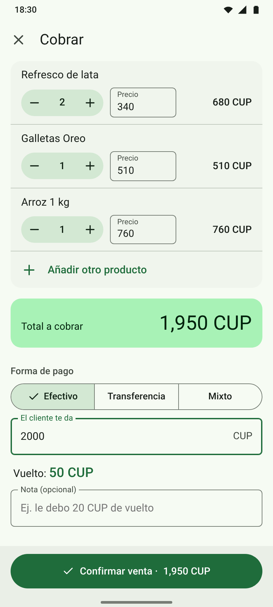
En Vender toca el reloj de arriba a la derecha (o Ver todas en Inicio) para ver las ventas de un día. Con las flechas o tocando la fecha cambias de día. Arriba ves el número de ventas, lo vendido y la ganancia de ese día.
Toca una venta para ver su detalle: productos, precio de cada uno, lo que costaron, la ganancia y el cambio con que se hizo.
Con el menú ⋮:
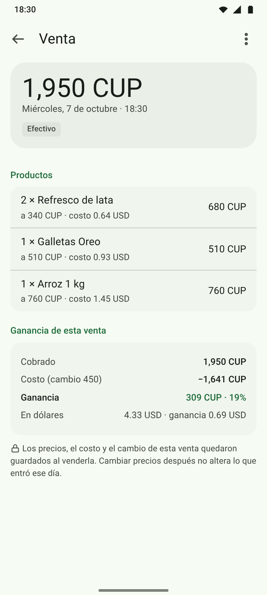
La pestaña Productos muestra arriba un resumen:
En cada producto ves el precio, la cantidad, el mínimo de hoy y etiquetas: Pérdida, Ganancia baja, Sin precio, Poco stock, Agotado.
Los filtros de arriba separan los que hay que revisar de precio, los de poco stock, los agotados y los ocultos.
El botón + Nuevo sirve para crear un producto o registrar una compra.
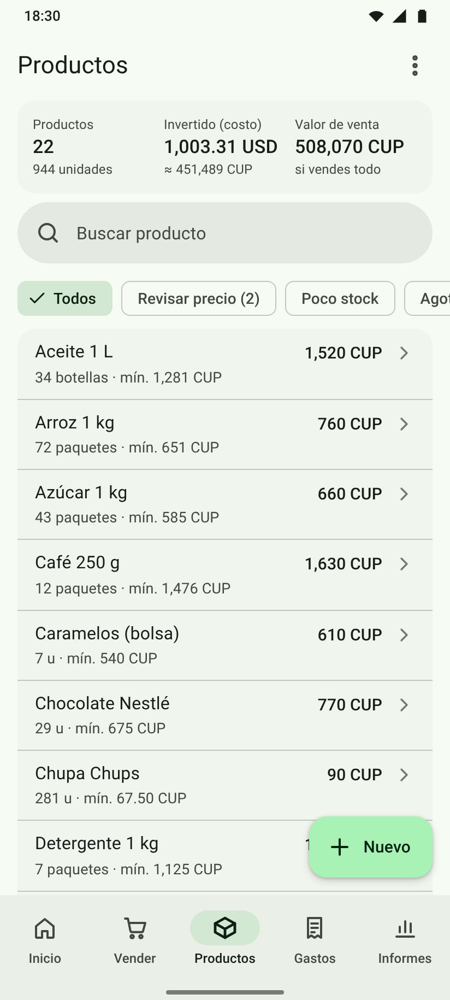
Toca un producto para ver su ficha:
En el menú ⋮: Editar (nombre, categoría, unidad, aviso de stock o corregir el costo), Ocultar (deja de salir en las listas pero sus ventas siguen contando) y Eliminar.
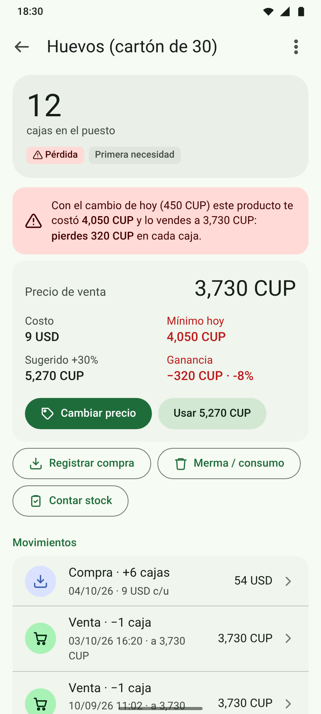
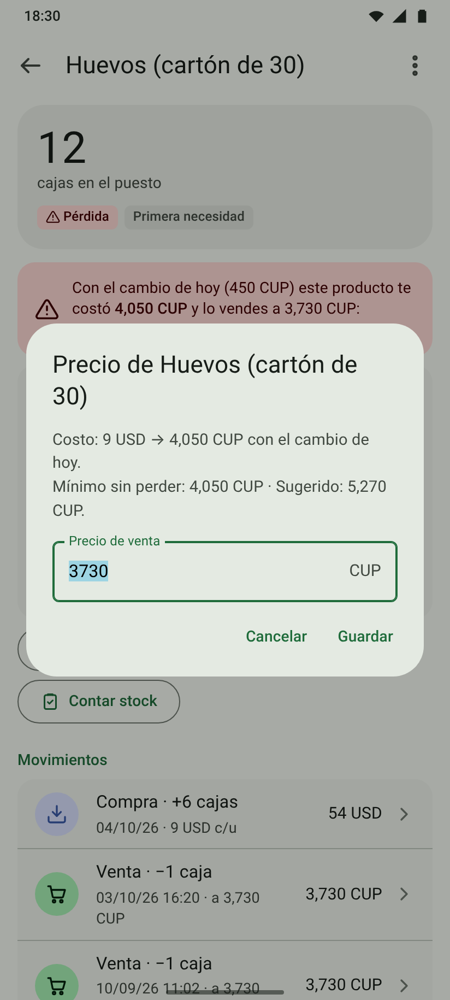
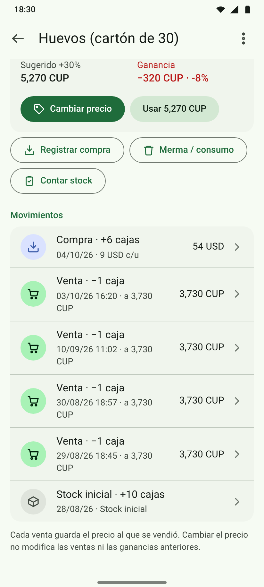
Cada vez que compres mercancía: Inicio → Compra, o en Productos + Nuevo → Registrar compra.
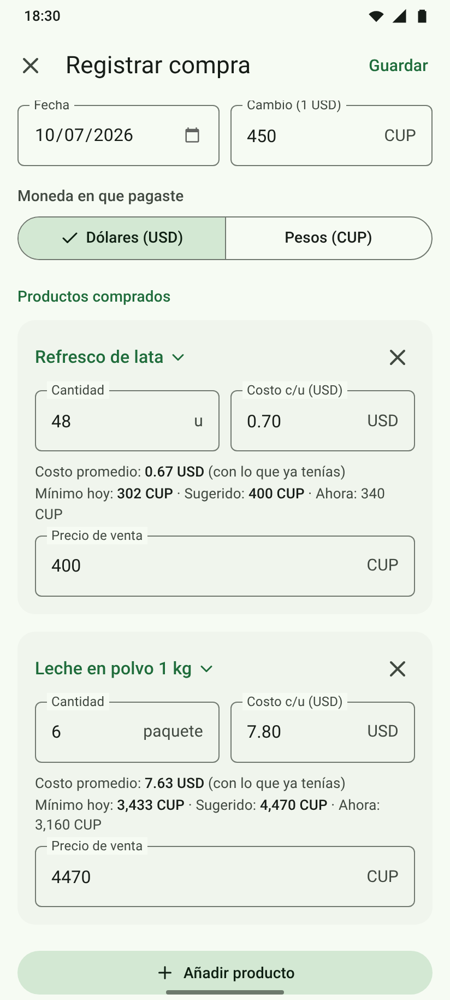
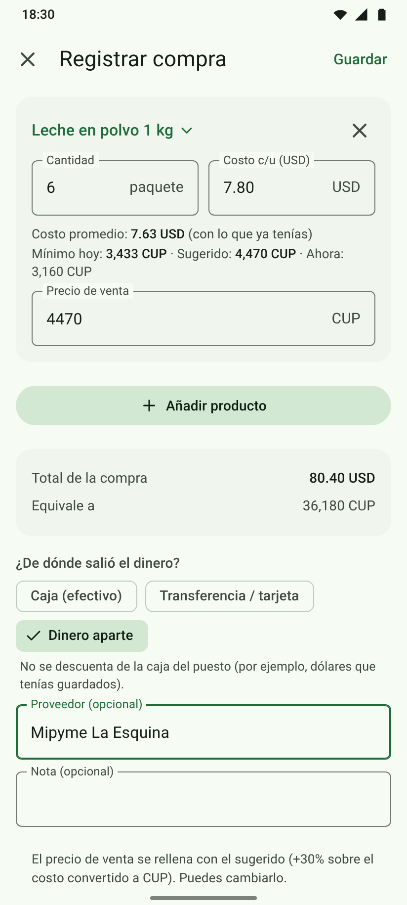
| Opción | Cuándo usarla |
|---|---|
| Dinero aparte | Pagaste con dólares que tenías guardados. No toca la caja del puesto. |
| Caja (efectivo) | Pagaste con el efectivo de la caja. Se descuenta de la caja. |
| Transferencia / tarjeta | Pagaste desde tu saldo de transferencias. |
Las compras no se restan de la ganancia: se convierten en mercancía. Lo que cuesta cada producto se descuenta cuando lo vendes. Se ven en Gastos → Compras de mercancía, donde puedes abrirlas para editarlas o eliminarlas.
Desde la ficha del producto:
Para revisar muchos productos de una vez: Productos → ⋮ → Contar todo el inventario. Escribe solo los que no coincidan y toca Guardar.
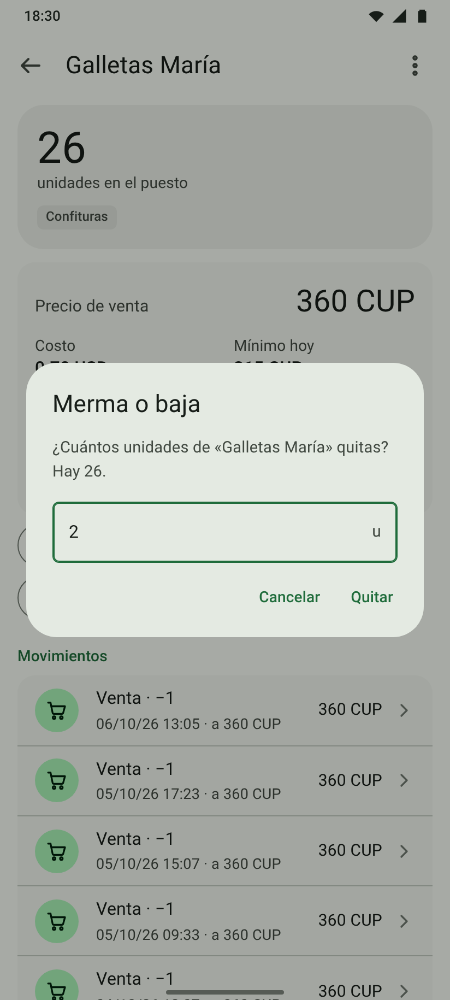
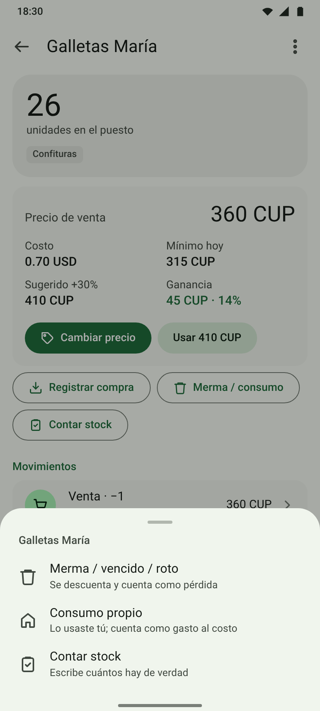
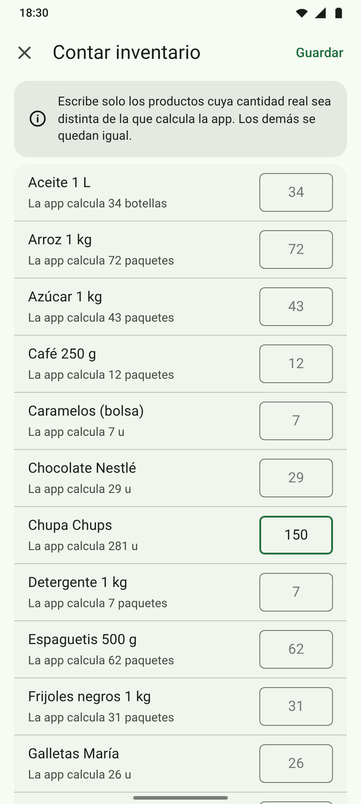
Todo lo que gastas para el negocio y no es mercancía: mensajería, transporte, impuestos, corriente y agua, bolsas, teléfono, imprevistos…
Los gastos se restan de la ganancia neta en Inicio, en el cierre y en los informes. En la pestaña Gastos se ven por mes, con el total arriba. Toca uno para editarlo o eliminarlo (menú ⋮).
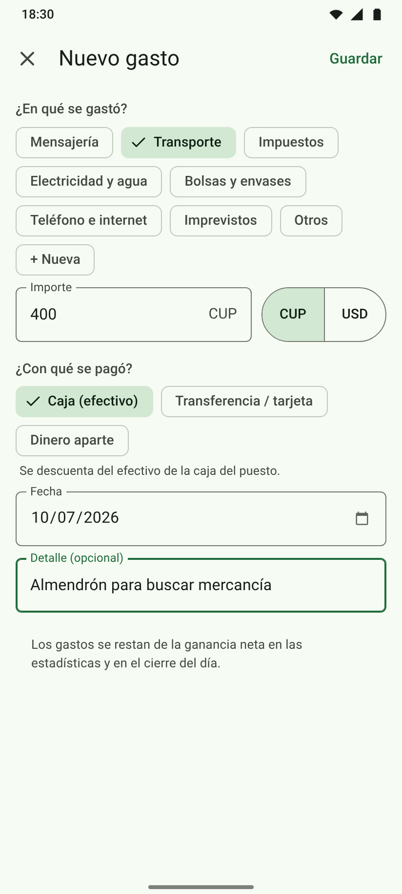
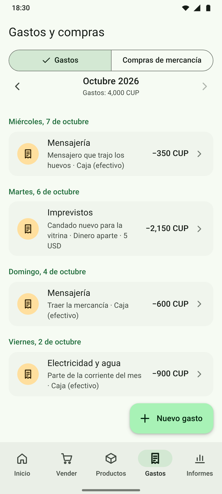
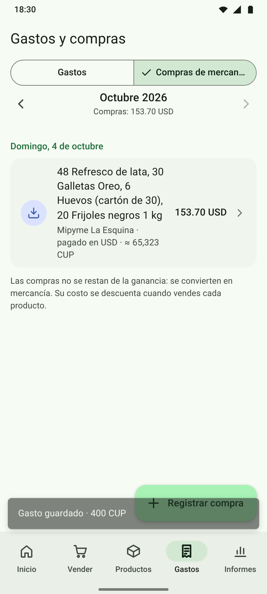
Toca la tarjeta Caja / Transferencias de Inicio. La app lleva dos cuentas:
Botones:
Debajo están todos los movimientos de la cuenta elegida. Toca uno para verlo.
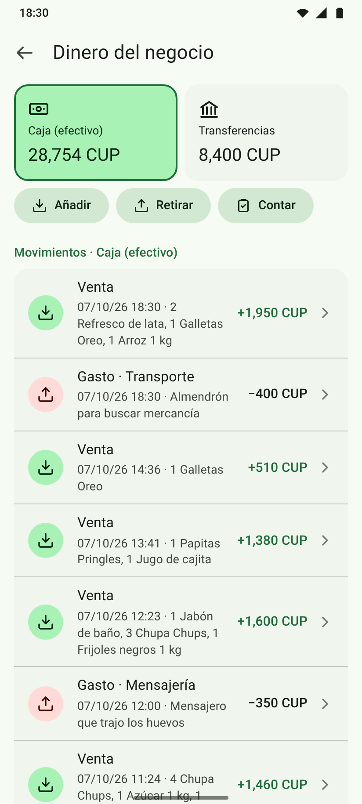
Al terminar el día toca Hacer el cierre del día (Inicio) o Cierre en los accesos rápidos. La pantalla tiene tres partes:
Cuenta el efectivo y escríbelo en ¿Cuánto efectivo hay contado?. Al momento verás si la caja cuadra, si sobra o si falta dinero.
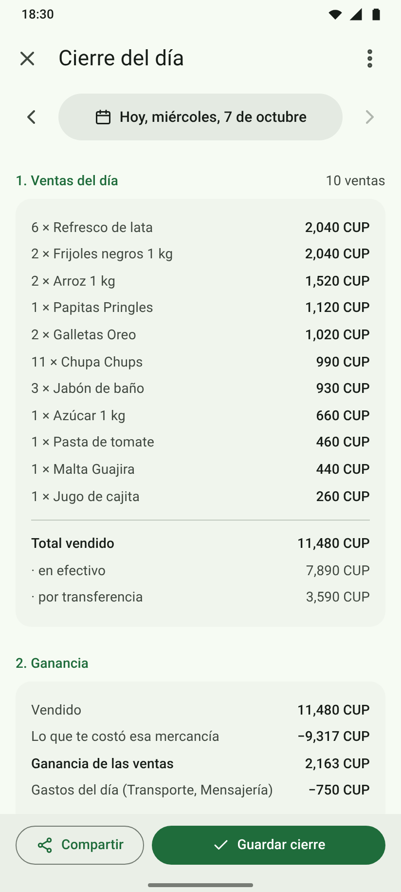
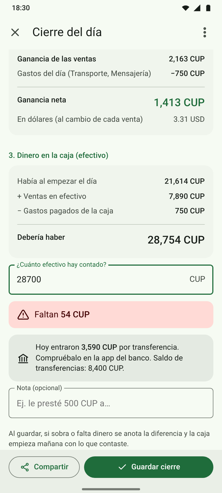
Si hubo transferencias, un recuadro te recuerda cuánto entró para que lo compruebes en la app del banco.
Toca Guardar cierre. La app te dice el resultado y la ganancia neta. Si sobró o faltó, anota la diferencia para que mañana la caja empiece con lo que contaste.
Con Compartir envías el resumen por WhatsApp (o a quien quieras).
🌿 *Green Place* — Cierre del día Miércoles, 7 de octubre Cambio: 1 USD = 450 CUP 🛒 *Ventas:* 10 ventas · 31 productos • 6 × Refresco de lata — 2,040 CUP • 2 × Frijoles negros 1 kg — 2,040 CUP • 2 × Arroz 1 kg — 1,520 CUP • … Total vendido: *11,480 CUP* Efectivo 7,890 CUP · Transferencia 3,590 CUP 💰 Ganancia de las ventas: 2,163 CUP 🧾 Gastos: −750 CUP (Transporte 400, Mensajería 350) 📈 *Ganancia neta: 1,413 CUP* (≈ 3.31 USD) 💵 *Caja (efectivo)* Al empezar: 21,614 CUP + Ventas en efectivo: 7,890 CUP − Gastos pagados de la caja: 750 CUP Debería haber: *28,754 CUP* Contado: 28,700 CUP ⚠️ Faltan 54 CUP 🏦 Transferencias recibidas hoy: 3,590 CUP
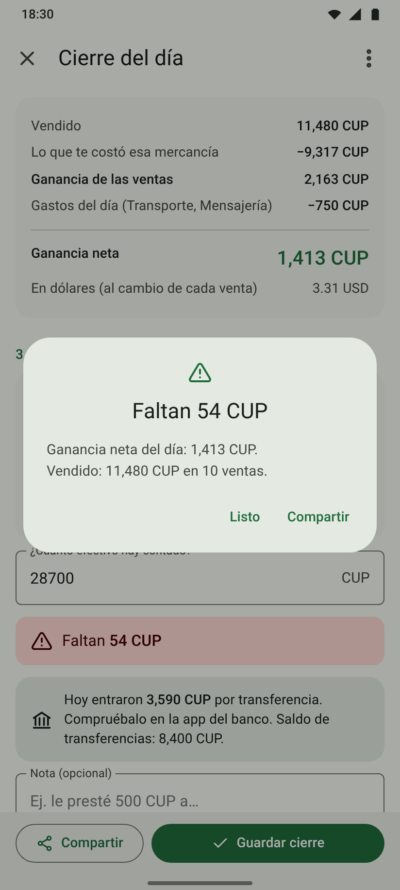
En la pestaña Informes eliges qué analizar: Día, Semana (lunes a domingo), Mes o Año. Con las flechas pasas al periodo anterior o siguiente; tocando la fecha eliges cualquier otra.
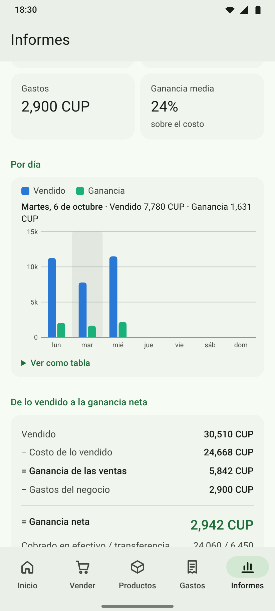
El gráfico muestra en azul lo vendido y en verde la ganancia de cada día (por horas en el informe del día, por meses en el del año). Toca una columna para ver sus cifras; con Ver como tabla aparecen todos los números.
De lo vendido a la ganancia neta explica paso a paso el cálculo: vendido − costo de lo vendido = ganancia de las ventas − gastos − mermas = ganancia neta. Incluye lo cobrado en efectivo y por transferencia y lo invertido en mercancía en ese periodo.
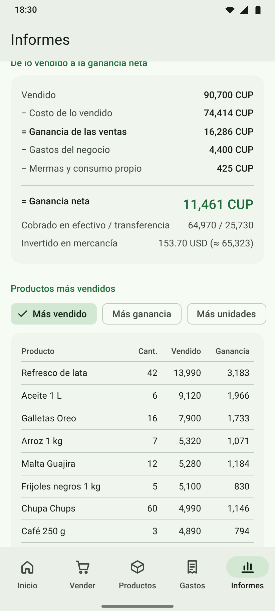
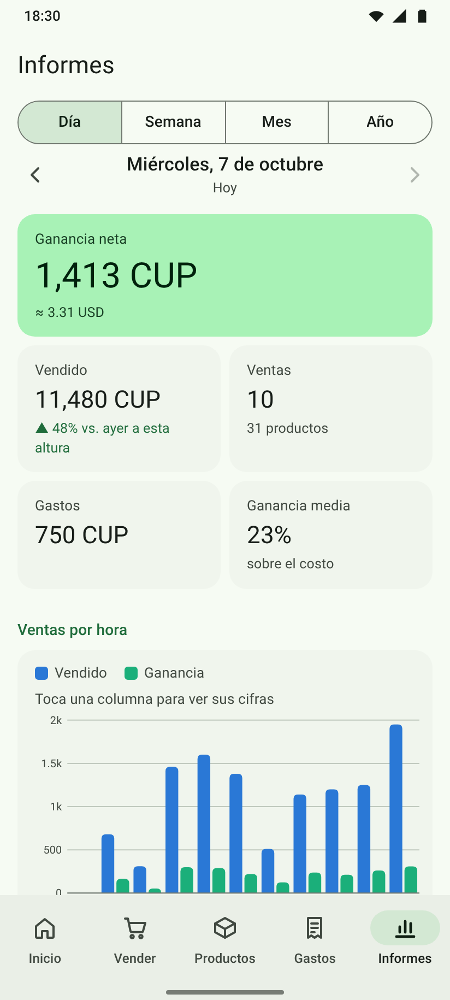
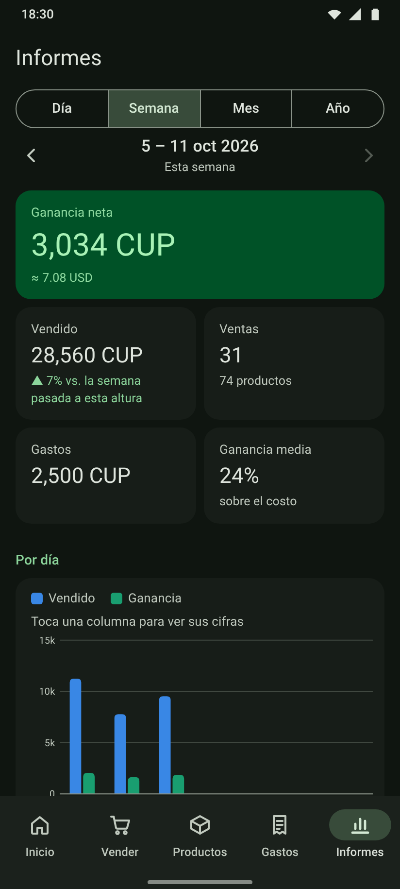
Toca la rueda de arriba en Inicio:
Toca Hacer copia de seguridad. Android te deja elegir dónde enviarla: Google Drive, WhatsApp (por ejemplo, un chat contigo misma) o Archivos. Si no aparece ese menú, se guarda en Descargas. Si pasa una semana sin copia, Inicio te lo recuerda.
Para recuperar los datos (en el mismo teléfono o en uno nuevo con la app instalada): Restaurar una copia y elige el archivo green-place-copia-…json.
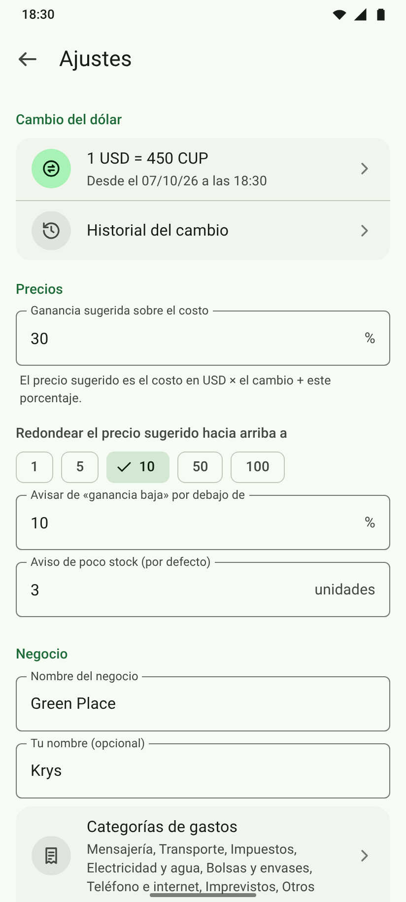
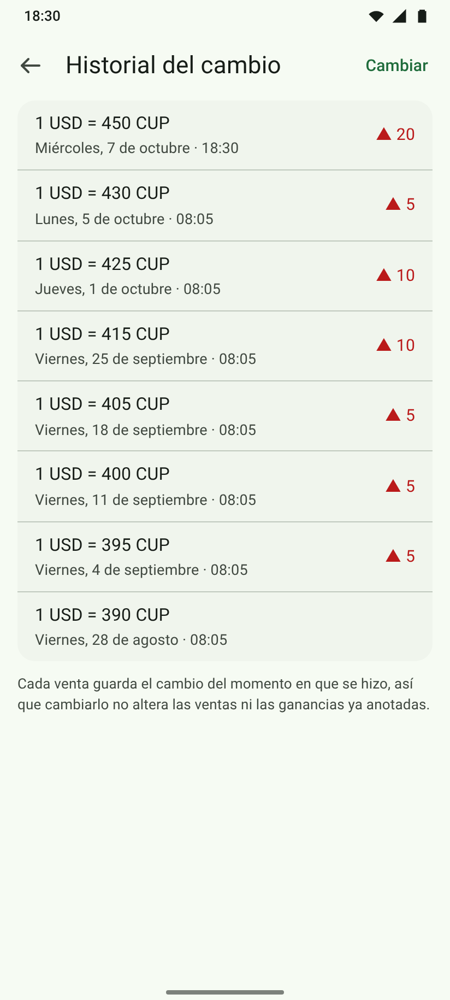
Esta parte es para quien mantiene la app (no hace falta para usarla).
El repositorio es público, así que GitHub Pages es gratuito. En él solo está el código y datos de ejemplo inventados para las capturas: las ventas reales nunca salen del teléfono.
Sube el número de VERSION en sw.js y APP_VERSION en js/store.js. Los teléfonos verán el aviso «Hay una nueva versión» y conservarán sus datos.
npx http-server -p 8080 -c-1 . NODE_PATH=$(npm root -g) node tools/screenshots.cjs DARK=1 NODE_PATH=$(npm root -g) node tools/screenshots.cjs NODE_PATH=$(npm root -g) node tools/make-manual.cjs